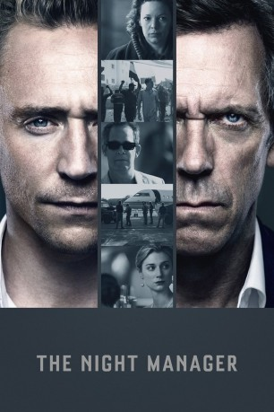

")
 
 IMDB-Wertung: 8.2 / 10
IMDB-Wertung: 8.2 / 10  Metascore:
Metascore: 
Der ehemalige britischen Soldate Jonathan Pine arbeitet als Nachtmanager in einem Luxushotel. Als ihn der britische Geheimdienst rekrutiert, um dem Waffenhändler Richard Onslow Roper das Handwerk zu legen, ist Pine mehr als gewillt, wieder in den Dienst zurückzukehren. Schließlich ist Roper verantwortlich für den grausamen Mord an Pines Freundin Sophie. Um sie zu rächen und einen der gefährlichsten Männer unserer Zeit zu Fall zu bringen, muss er sein Leben riskieren und den Kreis von Ropers Vertrauten infiltrieren, darunter auch Ropers Geliebte Jed. Doch schon bald zeigt sich, dass Rache nicht das einzige ist, was Pine antreibt ...
Jahr: 2016
Dauer: 43 Minuten
FSK: 12
Land: England Studio: BBCTonspuren: DTS - ,
Untertitel: Deutsch,
Auflösung: 720p (1280x720) Größe: 1822 MB
Genre: Thriller, Drama, Krimi, Mystery, TV-Serie
Regisseur: Susanne Bier
Drehbuch: Ernest Cline
Soundtrack:
Darsteller:
 Tom Hiddleston als Jonathan Pine
Tom Hiddleston als Jonathan Pine Tom Hollander als Lance Corkoran
Tom Hollander als Lance Corkoran Hovik Keuchkerian als Tabby
Hovik Keuchkerian als Tabby David Harewood als Joel Steadman
David Harewood als Joel Steadman Tobias Menzies als Geoffrey Dromgoole
Tobias Menzies als Geoffrey Dromgoole Natasha Little als Caroline Langbourne
Natasha Little als Caroline Langbourne Noah Jupe als Daniel Roper
Noah Jupe als Daniel Roper Sam Redford als Jasper
Sam Redford als JasperDatei: X:\HD-Serien\Night Manager S01\The Night Manager S01E01.mkv seit 01.07.2016
Festplatte: HD Serien(I-ST)
 Es gibt insgesamt 182 Filme in der Gruppe 'HD-Serien'
Es gibt insgesamt 182 Filme in der Gruppe 'HD-Serien'